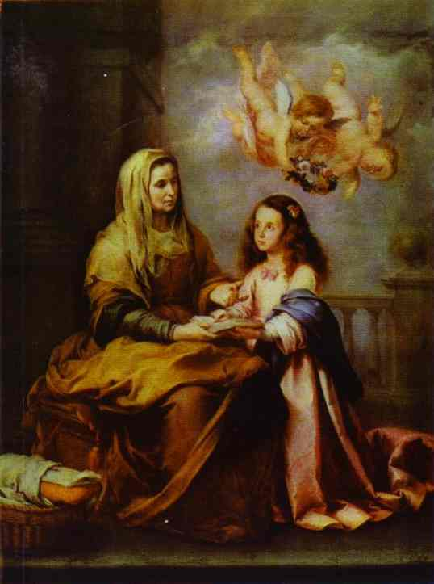

IT WAS in the year 1846 or 1847, at St. Wilfrid’s, that I first studied the life and spirit of the Venerable Grignon de Montfort; and now, after more than fifteen years, it may be allowable to say, that those who take him for their master will hardly be able to name a saint or ascetical writer to whose grace and spirit their mind will be more subject than to his. We may not yet call him Saint; but the process of his beatification is so far and so favourably advanced, that we may not have long to wait before he will be raised upon the altars of the Church.
There are few men in the eighteenth century who have more strongly upon them the marks of the Man of Providence than this Elias-like Missionary of the Holy Ghost and of Mary. His entire life was such an exhibition of the holy folly of the Cross, that his biographers unite in always classing him with St. Simon Salo and St. Philip Neri. Clement XI made him a missionary-apostolic in France, in order that he might spend his life in fighting against Jansenism, so far as it affected the salvation of souls. Since the apostolical epistles it would be hard to find words that burn so marvellously as the twelve pages of his prayer for the Missionaries of the Holy Ghost, to which I earnestly refer all those who find it hard to keep up, under their numberless trials, the first fires of the love of souls. He was at once persecuted and venerated everywhere. His amount of work, like that of St. Antony of Padua, is incredible and, indeed, inexplicable. He wrote some spiritual treatises, which have already had a remarkable influence on the Church during the few years they have been known, and bid fair to have a much wider influence in years to come. His preaching, his writing, and his conversation were all impregnated with prophecy, and with anticipations of the latter ages of the Church. He comes forward, like another St. Vincent Ferrer, as if on the days bordering on the Last Judgment, and proclaims that he brings an authentic message from God about the greater honour and wider knowledge and more prominent love of His Blessed Mother, and her connexion with the second advent of her Son. He founded two religious congregations—one of men, and one of women—which have been quite extraordinarily successful; and yet he died at the age of forty-three, in 1716, after only sixteen years of priesthood.
It was on the 12th of May 1853, that the decree was pronounced at Rome, declaring his writings to be exempt from all error which could be a bar to his canonisation. In this very treatise on the veritable devotion to our Blessed Lady, he has recorded this prophecy. “I clearly foresee that raging brutes will come in fury to tear with their diabolical teeth this little writing, and him whom the Holy Ghost has made use of to write it; or at least to envelop it in the silence of a coffer, in order that it may not appear.” Nevertheless, he prophesies both its appearance and its success. All this was fulfilled to the letter. The author died in 1716, and the treatise was found by accident by one of the priests of his congregation at St. Laurent-sur-Sevre, in 1842. The existing superior was able to attest the handwriting as being that of the venerable founder; and the autograph was sent to Rome, to be examined in the process of canonisation.
All those who are likely to read this book love God, and lament that they do not love Him more; all desire something for His glory—the spread of some good work, the success of some devotion, the coming of some good time. One man has been striving for years to overcome a particular fault, and has not succeeded. Another mourns, and almost wonders while he mourns, that so few of his relations and friends have been converted to the faith. One grieves that he has not devotion enough; another that he has a cross to carry, which is a peculiarly impossible cross to him; while a third has domestic troubles and family unhappinesses, which feel almost incompatible with his salvation; and for all these things prayer appears to bring so little remedy. But what is the remedy that is wanted? what is the remedy indicated by God Himself? If we may rely on the disclosures of the Saints, it is an immense increase of devotion to our Blessed Lady; but, remember, nothing short of an immense one. Here, in England, Mary is not half enough preached. Devotion to her is low and thin and poor. It is frightened out of its wits by the sneers of heresy. It is always invoking human respect and carnal prudence, wishing to make Mary so little of a Mary that Protestants may feel at ease about her. Its ignorance of theology makes it unsubstantial and unworthy. It is not the prominent characteristic of our religion which it ought to be. It has no faith in itself. Hence it is that Jesus is not loved, that heretics are not converted, that the Church is not exalted; that souls, which might be saints, wither and dwindle; that the Sacraments are not rightly frequented, or souls enthusiastically evangelised.
Jesus is obscured because Mary is kept in the background. Thousands of souls perish because Mary is withheld from them. It is the miserable unworthy shadow which we call our devotion to the Blessed Virgin that is the cause of all these wants and blights, these evils and omissions and declines. Yet, if we are to believe the revelations of the Saints, God is pressing for a greater, a wider, a stronger, quite another devotion to His Blessed Mother. I cannot think of a higher work or a broader vocation for anyone than the simple spreading of this peculiar devotion of the Venerable Grignon de Montfort. Let a man but try it for himself, and his surprise at the graces it brings with it, and the transformations it causes in his soul, will soon convince him of its otherwise almost incredible efficacy as a means for the salvation of men, and for the coming of the kingdom of Christ. Oh, if Mary were but known, there would be no coldness to Jesus then! Oh, if Mary were but known, how much more wonderful would be our faith, and how different would our Communions be! Oh, if Mary were but known, how much happier, how much holier, how much less worldly should we be, and how much more should we be living images of our sole Lord and Saviour, her dearest and most blessed Son!
[1]I have translated the whole treatise myself, and have taken great pains with it, and have been scrupulously faithful. At the same time, I would venture to warn the reader that one perusal will be very far from making him master of it. If I may dare to say so, there is a growing feeling of something inspired and supernatural about it, as we go on studying it; and with that we cannot help experiencing, after repeated readings of it, that its novelty never seems to wear off, nor its fulness to be diminished, nor the fresh fragrance and sensible fire of its unction ever to abate. May the Holy Ghost, the Divine Zealot of Jesus and Mary, deign to give a new blessing to this work in England; and may He please to console us quickly with the canonisation of this new apostle and fiery missionary of His most dear and most immaculate Spouse; and still more with the speedy coming of that great age of the Church, which is to be the Age of Mary!
F. W. Faber,
Priest of the Oratory
Presentation of our Blessed Lady,
1862
“GOD wishes that His holy Mother should now be more known, more loved, more honoured, than ever she has been; and this will no doubt come to pass, if the predestinate will enter, by the grace and light of the Holy Ghost, into the interior and perfect practice which I will discover to them.” These words of the venerable servant of God, Louis Marie Grignon de Montfort, cannot fail to interest our piety, and to inspire us with a lively desire of learning from him so excellent a practice of honouring the most holy Virgin.
He had been drawn from his earliest infancy, in quite a particular fashion, to the love of this Queen of Angels; and in a conversation which he had with his intimate friend Monsieur Blain, two years before his death, the pious missionary confessed to him that God had favoured him with an extraordinary grace, which was the continued presence of Jesus and Mary in the bottom of his soul. This word was a mystery to Monsieur Blain; but we shall see the explanation of it in this little treatise. We shall see revealed to us there the heart of him who knew no fairer name than the slave of Jesus in Mary. We do not, however, pretend to say that this explanation will be equally understood by all. We must remember here that word of the Eternal Wisdom, “Thou hast hidden these things from the wise and prudent, and revealed them to the little ones.” It has been said in the Life of the venerable servant of God, that his history will never be understood except by a Christian. It has this in common with the lives of a great number of the servants of God. We may say also that this little work will never be understood by a Christian who is too much a stranger to the maxims of humility and evangelical simplicity, and that the wise of this world will find themselves shocked at the lessons of true wisdom which they will read without penetrating their sense. Animalis homo non percipit ea, quce sunt Spiritus Dei. Stultitia enim est illiy et non potest intelligere,’ quia spiritualiter examinatur. The man who guides himself only by natural light does not comprehend the things of the Spirit of God. They seem to him follies, because they can only be judged by a supernatural light which he has not got. But let us hasten to add, that sincere and simple souls will relish the manna hidden in the pious and touching instructions of the virtuous priest who consumed his life in evangelising the poor. They will bless Divine Providence for the treasure. They will feel themselves penetrated with love for Jesus and Mary, in reading these burning pages, which the man of God wrote in the fervour of his prayer, without ever losing sight of the presence of our Divine Saviour and His holy Mother. . . . In conclusion, let us say a few words on the discovery of this treatise.
At the time of the French revolution in 1793, the manuscripts which the house of the Missionaries of St. Laurent-sur-Sevre possessed were hidden in the neighbouring farms, where they remained buried in dust for many years. Later on, those which were found were put into the library of the missionaries. But this little treatise was not at that time recognised, as was the case with some others also composed by the venerable founder of the Company. It was not till 1842 that one of the priests of the house of St. Laurent found it by chance in the library, where it had been put without being recognised, after having been mixed up with a great number of imperfect books. “After I had read a few pages,” says the priest, “I took it, hoping to find it useful for making a sermon on our Lady. I read by chance the place where he speaks of his Company of Mary. I recognised the style and thoughts of our venerable founder, and his way of addressing his missionaries; and after that, I had no doubt the manuscript was his. I took it to our superior, who identified the handwriting.”[2]
1. IT IS by the most holy Virgin Mary that Jesus has come into the world, and it is also by her that He has to reign in the world.
2. Mary has been singularly hidden during her life. It is on this account that the Holy Ghost and the Church call her alma Mater—Mother secret and hidden. Her humility was so profound that she had no propensity on earth more powerful or more unintermitting than that of hiding herself, even from herself, as well as from every other creature, so as to be known to God only.
3. He heard her prayers to Him, when she begged to be hidden, to be humbled, and to be treated as in all respects poor and of no account. He took pleasure in hiding her from all human creatures in her conception, in her birth, in her life, and in her resurrection and assumption. Her parents even did not know her, and the Angels often asked of each other: Quce est ista? Who is that? Because the Most High either hid her from them, or if He revealed anything of her to them, it was nothing compared to what He kept undisclosed.
4. God the Father consented that she should do no miracle, at least no public one, during her life, although He had given her the power. God the Son consented that she should hardly ever speak, though He had communicated His wisdom to her. God the Holy Ghost, though she was His faithful Spouse, consented that His Apostles and Evangelists should speak but very little of her, and no more than was necessary to make Jesus Christ known.
5. Mary is the excellent masterpiece of the Most High, of which He has reserved to Himself both the knowledge and the possession. Mary is the admirable Mother of the Son, who took pleasure in humbling and concealing her during her life, in order to favour her humility, calling her by the name of woman (mulier), as if she was a stranger, although in His heart He esteemed and loved her above all angels and all men. Mary is the sealed fountain and the faithful Spouse of the Holy Ghost, to whom He alone has entrance. Mary is the sanctuary and the repose of the Holy Trinity, where God dwells more magnificently and more divinely than in any other place in the universe, without excepting His dwelling between the Cherubim and Seraphim. Neither is it allowed to any creature, no matter how pure, to enter into that sanctuary without a great and special privilege.
6. I say with the Saints, The divine Mary is the terrestrial Paradise of the New Adam, where He is incarnate by the operation of the Holy Ghost, in order to work there incomprehensible marvels. She is the grand and divine World of God, where there are beauties and treasures unspeakable. She is the magnificence of the Most High, where He has hidden, as in her bosom, His only Son, and in Him all that is most excellent and most precious. Oh, what grand and hidden things that mighty God has wrought in this admirable creature! How has she herself been compelled to say it, in spite of her profound humility: Fecit mihi magna, qui potens est! The world knows them not, because it is at once incapable and unworthy of such knowledge.
7. The Saints have said admirable things of this Holy City of God; and, as they themselves avow, they have never been more eloquent and more content than when they have spoken of her. Yet, after all they have said, they cry out that the height of her merits, which she has raised up to the throne of the Divinity, cannot be fully seen; that the breadth of her charity, which is broader than the earth, is in truth immeasurable; that the grandeur of her power, which she exercises even over God Himself, incomprehensible; and finally, that the depth of her humility, and of all her virtues and graces, is an abyss which never can be sounded. O height incomprehensible! O breadth unspeakable! O grandeur immeasurable! O abyss impenetrable!
8. Every day, from one end of the earth to the other, in the highest heights of the heavens and in the profoundest depths of the abysses, everything preaches, everything publishes, the admirable Mary! The nine choirs of Angels, men of all ages, sexes, conditions, and religions, good or bad, nay even the devils themselves, willingly or unwillingly, are compelled, by the force of truth, to call her Blessed. St. Bonaventure tells us that all the Angels in heaven cry out incessantly to her, Sancta, sancta, sancta Maria, Dei Genitrix et Virgo; and that they offer to her millions and millions of times a day the Angelical Salutation, Ave Maria; prostrating themselves before her, and begging of her, in her graciousness, to honour them with some of her commands. St. Michael, as St. Augustine says, although the prince of all the heavenly court, is the most zealous in honouring her and causing her to be honoured, while he waits always in expectation that he may have the honour to go, at her bidding, to render service to some one of her servants.
9. The whole earth is full of her glory, especially among Christians, amongst whom she is taken as the protectress of many kingdoms, provinces, dioceses, and cities. Numbers of cathedrals are consecrated to God under her name. There is not a church without an altar in her honour, not a country or a canton where there are not some miraculous images, where all sorts of evils are cured, and all sorts of good gifts obtained. Who can count the confraternities and congregations in her honour? How many religious orders have been founded in her name and under her protection! What numbers there are of Brothers and Sisters of all these confraternities, and of religious men and women of all these orders, who publish her praises and confess her mercies! There is not a little child, who, as it lisps the Ave Maria, does not praise her. There is scarcely a sinner who, even in his obduracy, has not some spark of confidence in her. Nay the very devils in hell respect her while they fear her.
10. After that we must surely say with the Saints, De Maria nunquam satis; we have not yet praised, exalted, honoured, loved, and served Mary as we ought to do. She has deserved still more praise, still more respect, still more love, and far more service.
11. After that we must say with the Holy Ghost, Omnis gloria filice Regis ab intus—“All the glory of the King’s daughter is within.” It is as if all the outward glory, which heaven and earth rival each other in laying at her feet, is nothing in comparison with that which she receives within from the Creator, and which is not known by creatures, who in their littleness are unable to penetrate the secret of the secrets of the King.
12. After that we must cry out with the Apostle, Nec oculus vidit, nec auris audivit, nec in cor hominis ascendit—“Eye has not seen, nor ear heard, nor man’s heart comprehended,” the beauties, the grandeurs, the excellences, of Mary, the miracle of the miracles of grace, of nature, and of glory. If you wish to comprehend the Mother, says a Saint, comprehend the Son; for she is the worthy Mother of God. Hic taceat omnis lingua, “Here let every tongue be mute.”
13. It is with a particular joy that my heart has dictated what I have just written, in order to show that the divine Mary has been up to this time unknown, and that this is one of the reasons that Jesus Christ is not known as He ought to be. If, then, as is certain, the kingdom of Jesus Christ is to come into the world, it will be but a necessary consequence of the knowledge of the kingdom of the most holy Virgin Mary, who brought Him into the world the first time, and will make His second advent full of splendour.
